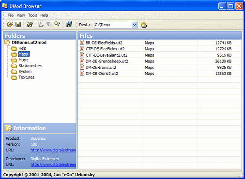

UMod Browser
UMod Browser is an external utility to unpacking any files from an Unreal Module (UMOD file) and is created by Jan "eGo" Urbansky (Jan). Version 1.4 is currently available at http://www.ego-creations.de |

|
Features
- Open some UMod files
- Install the current opened UMod
- List and extraction of any files inside an UMod
- Works with several UMod file formats
- Add your favorite UMod file format
- Preview of text and music files
Downloads
[UMod Browser 1.4] (build 09.06.2004)
Special Thanks
...goes to [Antonio Cordero Balcázar] for his useful Delphi units and creator of UT Package Tool
Development Preview
For the year 2007 a new version of UMod Browser is planned with a lot of new features. UMod Browser 2007 is fully compatible with Microsofts new Windows Vista and is using the .NET technology now.
Planned new features are:
• Texture Browser to browse texture packages temporarily
• Registry Fixer to repairing registry problems with UMOD files
• ZIP'ing to create NonUMOD's from UMOD files
...and many more
your suggestion is welcome
Screenshot: UMod Browser 2007

Discussion
RegularX: Nicely done. A fine alternative to using and view umods, particularly for people who don't "trust" umods because they can't see what's in them.